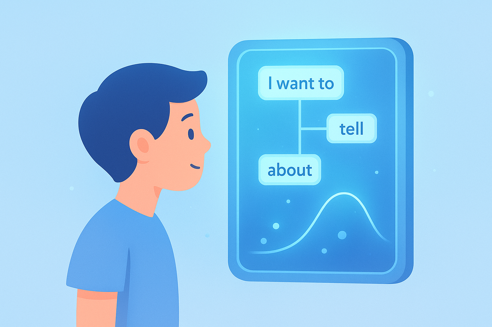
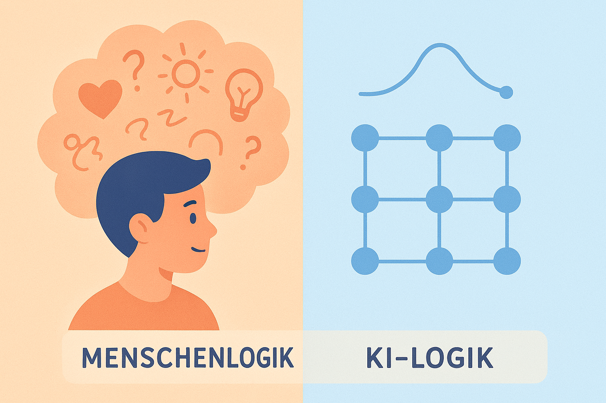
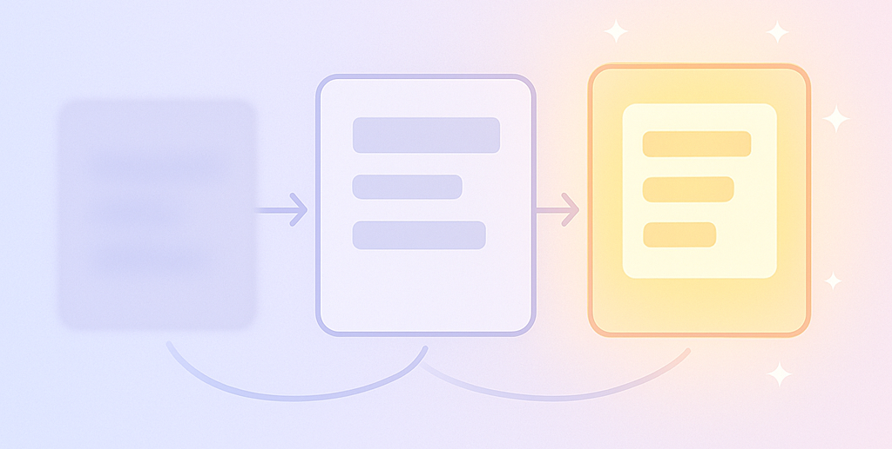

4 Die Bausteine eines perfekten Prompts
Wenn du heute mit einer KI wie ChatGPT sprichst, fühlt es sich fast magisch an. Du tippst einen Satz ein – und boom, die Antwort ist da: klar formuliert, höflich, strukturiert, oft sogar überraschend kreativ. Doch hinter dieser scheinbaren Magie steckt eine einfache, aber faszinierende Wahrheit:
👉 KI versteht keine Welt.
👉 KI versteht Muster. Und je besser du diese Musterlogik verstehst, desto besser kannst du prompten. Dieses Kapitel ist dein Deep Dive in die Denkweise der KI – aber keine Sorge, alles ohne Mathe, ohne Informatikvoraussetzungen, nur mit Storytelling, Beispielen und praktischen Aha-Momenten.

4.1 Die große Enthüllung: KI ist kein Geist – sie ist ein Muster-Spiegel
Stell dir vor, du hältst einen gigantischen Spiegel in der Hand. Doch anstatt Licht zu reflektieren, reflektiert er Wahrscheinlichkeiten. Wenn du einen Satz beginnst mit:
„Ich habe gestern im Park…“
… dann „weiß“ der Spiegel nicht wirklich, was ein Park ist. Aber er hat gelernt, welche Wörter typischerweise nach dieser Phrase folgen. Vielleicht:
- … einen Freund getroffen
- … meinen Hund ausgeführt
- … ein Picknick gemacht
Diese Muster hat die KI aus Milliarden Texten gelernt. Sie erkennt: Was kommt statistisch wahrscheinlich als nächstes?
➡️ Das ist der zentrale Mechanismus moderner KI: Mustervervollständigung.
Doch hier kommt das Interessante für dich als Prompt Engineer:
💡 KI kann nur liefern, was du vorbereitest.Wenn dein Input schwammig ist, wird das Muster schwammig. Wenn dein Input klar ist, wird das Muster extrem präzise.
Dein Job ist also nicht, die KI zu „überlisten“ – dein Job ist, ihr die richtigen Muster zu geben.
4.2 Das Dreieck des KI-Denkens: Muster → Kontext → Ziel
Damit du nachvollziehen kannst, wie KI innerlich arbeitet, gehen wir durch das zentrale „Denk-Dreieck“, das jede Antwort steuert:
🔹 1. Muster (What is typical?)
Die KI kennt Beispiele aus dem Training. Sie erkennt Stile. Sie erkennt Formulierungsformen. Sie erkennt typische Reaktionen auf bestimmte Inputs.
🔹 2. Kontext (What is the situation?)
Die KI achtet extrem darauf, was du gerade meinst. Wenn du sagst:
„Schreibe mir einen Text über Hunde.“
… ist das ein anderes Muster als:
„Erkläre mir Hunde wissenschaftlich für ein Schulprojekt in 6 Sätzen.“
Der Kontext gibt dem Muster Richtung.
🔹 3. Ziel (What should the output achieve?)
Was willst du? Das weiß die KI nur, wenn du es sagst.
Ein Satz wie:
„Mach es einfacher.“
… reicht meistens nicht. Einfach für wen? Für ein Kind? Für dich? Für TikTok? Für die Schule?
4.3 Warum Präzision mächtiger ist als Kreativität
Viele denken, gutes Prompting bedeutet, superkreative oder lange Sätze zu formulieren. Das Gegenteil ist wahr.
Die KI liebt:
- klare Ziele
- klare Rollen
- klare Beispiele
- klare Einschränkungen
- klare Schritte
Warum? Weil sie dadurch Muster eingrenzen kann.
Stell dir vor, du würdest einen Freund bitten: „Erzähl mir etwas.“
Das ist übertrieben offen. Du würdest alles bekommen – oder nichts.
Aber wenn du sagst:
„Erzähl mir in 4 Sätzen, warum der Mond uns beeinflusst, so als würdest du es einem 10-Jährigen erklären.“
Jetzt hast du:
- Ziel → erklären
- Format → 4 Sätze
- Stil → kindgerecht
- Kontext → Mond und Einfluss
➡️ Die KI weiß sofort, welches Muster sie abrufen muss.
Präzision ist kein Käfig. Präzision ist ein Booster.
4.4 Der geheime Unterschied zwischen Menschenlogik und KI-Logik
🔹 Menschen denken:
- in Zielen
- in Absichten
- in Bedeutungen
- in Emotionen
🔹 KI denkt:
- in Wahrscheinlichkeiten
- in Wortketten
- in Mustern
- in Konsistenz
Das bedeutet:
Wenn du menschlich formulierst, versteht dich die KI oft falsch.
Wenn du mustergerecht formulierst, versteht dich die KI präzise.
Beispiel:
❌ Menschlich:
„Kannst du die Geschichte ein bisschen emotionaler machen?“
✔️ KI-kompatibel:
„Überarbeite die Geschichte so, dass:
1. Der Hauptcharakter seine Gefühle deutlicher beschreibt,
2. Jede Szene ein emotionales Detail zeigt,
3. Der Ton insgesamt wärmer und hoffnungsvoller wird.“
Das ist kein Stilwandel.
Das ist Mustersteuerung.

4.5 Das „Muster-Rauschen“-Problem – und warum du es mit einem guten Prompt löst
Die KI hat keinen „Willen“.
Sie hat keine „Meinung“.
Sie hat keine „Einzigartigkeit“.
Was sie hat, ist:
➡️ ein gigantisches Rauschen aus Mustern, das du ordnen musst.
👉 Wenn du nicht ordnest, kommt Chaos.
Beispiel:
„Erzähl mir etwas über Katzen.“
Erwartest du Wissenschaft? Humor? Fakten? Anekdoten? TikTok-Style? Wikipedia-Style?
Du hast ein Muster-Konglomerat erzeugt.
👉 Wenn du dagegen sagst:
„Erstelle eine Liste mit 5 überraschenden Fakten über Katzen, im Stil eines lockeren TikTok-Skripts.“
Jetzt ist das Rauschen weg.
Jetzt ist es eindeutig.
Jetzt kann die KI 1:1 das richtige Muster auswählen.
Dieses Ordnen ist die Kunst des Prompt Engineering – und junge Leute lernen es besonders schnell, weil sie sowieso ständig klare, strukturierte Bits produzieren:
👉 Hashtags
👉 Tags
👉 Kategorien
👉 Emojis
👉 TikTok Hooks
Das ist bereits Prompting.
4.6 Die wichtigste Fähigkeit: Muster beschreiben können
Wenn du später richtig gute Prompts schreiben willst, musst du eine Sache perfekt beherrschen:
👉 Du musst in Mustern denken lernen.Das bedeutet:
- Stile erkennen
- Tonlagen unterscheiden
- Formate definieren
- Grenzen setzen
- Beispiele formulieren
Beispiele:
„Erklär mir Quantenphysik“ → unklar.
„Erklär mir Quantenphysik wie ein YouTube-Creator im 60-Sekunden-Short-Format“ → klar.
„Schreibe eine Geschichte“ → unklar.
„Schreibe eine 7-Satz-Geschichte in Tagebuchform über eine Person, die KI zum ersten Mal benutzt“ → klar.
Du steckst das Muster ab – und die KI füllt es aus.
Im ersten Teil von Kapitel 3 hast du die drei grundlegenden Bausteine kennengelernt:
- Kontext – das „Worum geht’s?“
- Rolle – „Wer soll die KI sein?“
- Ziel – „Was willst du wirklich?“
In diesem zweiten Teil gehen wir einen Schritt weiter: Wir machen aus diesen Bausteinen konkrete Werkzeuge, die du sofort einsetzen kannst, um ChatGPT & Co. auf ein neues Level zu bringen.
Wir schauen uns an:
- Die verborgene Logik hinter guten Prompts
- Wie du häufige Fehler vermeiden kannst
- Wie du KI wie ein Teammitglied steuerst
- Wie du mit Mini-Formeln Prompts erschaffst, die zu fast jeder Aufgabe passen
- Konkrete Beispiele, die du sofort übernehmen kannst
4.7 Warum viele Prompts scheitern (und wie du das vermeidest)
Bevor wir tiefer einsteigen, schauen wir kurz auf die häufigsten Gründe, warum ein Prompt nicht funktioniert.
Viele Nutzer schreiben Prompts wie:
„Erklär mir das Thema bitte.“
Oder:
„Mach das besser.“
Oder:
„Schreib mal einen Text über Geld.“
Die KI denkt dann: Okay… aber wie? Für wen? Wie lang? Informell oder wissenschaftlich? Was bedeutet „besser“? Was genau willst du?“
Wenn ein Prompt unvollständig ist, geht die KI in den „Standardmodus“:
- generisch
- mittelmäßig
- ohne klare Struktur
- ohne erkennbare Zielgruppe
- oft zu lang oder zu kurz
- manchmal an dir vorbeiformuliert
Das ist nicht deine Schuld. Das ist menschlich. Aber ab jetzt bist du besser ausgestattet.
Denn die Lösung ist immer dieselbe:
👉 Du musst der KI klar zeigen, was du willst.
👉 Nicht mehr – aber auch nicht weniger.
Damit kommen wir zu einer extrem wichtigen Erkenntnis:
4.8 Gute Prompts sind nicht „lang“ – sie sind präzise
Viele glauben, ein guter Prompt müsse wie eine ganze Wikipedia-Seite aussehen.
Falsch.
Gute Prompts bestehen aus wenigen, aber klaren Bausteinen, zum Beispiel:
- Zielgruppe
- Format
- Ziel
- Stil
- Einschränkungen
- Beispiele
Ein Prompt wie:
„Erklär das Thema für Schüler der 9. Klasse, maximal 150 Wörter, mit einem Beispiel aus dem Alltag.“
… ist für die KI hundertmal verständlicher als:
„Erklär mir das irgendwie.“
Genau darum dreht sich dieses Kapitel:
Wie du diese „Mini-Bausteine“ sicher kombinierst.
Bevor wir loslegen, hier eine visuelle Illustration, die diesen Teil einleitet:

Weiter geht’s!
4.9 Die „Mini-Bausteine“ eines Profi-Prompts
(Wenn du dir nur eins aus diesem Kapitel merken willst: das hier!)
👉 Ein guter Prompt kann sehr einfach aussehen – wenn er **durchdacht aufgebaut** ist.Hier sind die sechs wichtigsten Bausteine, die du wie Lego kombinieren kannst.
👉 🧩 Baustein 1: ZielgruppeFür wen soll die KI schreiben?
- Schüler
- Beginner
- Experten
- TikTok-Zuschauer
- Newsletter-Leser
- Lehrer
- Unternehmer
- Wissenschaftler
Jede Zielgruppe → andere Sprache.
Beispiel:
„Erkläre das Thema so, dass ein 15-jähriger Schüler es sofort versteht.“
👉 🧩 Baustein 2: FormatWie soll die Antwort aussehen?
- Liste
- Dialog
- Bericht
- Bullet Points
- Instagram Caption
- Story
- Erklärvideo-Skript
- Beispiel-Lösung
- Argumentation
Beispiel:
„Formatiere die Antwort als kurze Story in drei Abschnitten.“
👉 🧩 Baustein 3: Ziel / Output-TypWas ist das Endprodukt?
- Erklärung
- Zusammenfassung
- Code
- Analyse
- Text
- Beispiel
- Schritt-für-Schritt-Anleitung
- Vergleich
- Entscheidungshilfe
Beispiel:
„Gib eine Schritt-für-Schritt-Anleitung.“
👉 🧩 Baustein 4: StilEs klingt banal – aber es ist entscheidend.
- humorvoll
- sachlich
- jugendlich
- motivierend
- wie ein Coach
- wie ein Professor
- wie ein Freund
- minimalistisch
- strukturiert
- poetisch
Beispiel:
„Schreibe motivierend und klar wie ein guter Lerncoach.“
👉 🧩 Baustein 5: EinschränkungenDas ist GOLD wert.
- maximale Länge
- bestimmte Wörter vermeiden
- Beispiele aus bestimmten Bereichen
- keine Fachsprache
- simples Deutsch
- nur Bullet Points
- nur ein Absatz
Beispiel:
„Maximal 6 Sätze, keine Fremdwörter.“
👉 🧩 Baustein 6: Beispiele (optional, aber mega)Wenn du der KI ein Beispiel gibst, passiert Magie.
Warum? Weil du der KI ein Muster gibst – und Muster sind ihr Spezialgebiet.
Beispiel:
„Hier ist ein Beispiel für den Stil: ‚Stell dir vor, du öffnest eine Tür…‘ Bitte schreibe im gleichen Stil.“
💡 Der Profi-Trick:Die sechs Bausteine musst du nicht immer alle nutzen. Oft reichen drei oder vier – je nach Aufgabe.
Aber wenn du willst, dass die KI sehr genau arbeitet, nutze mehr Bausteine.
4.10 Die universelle Prompt-Formel (die du für fast alles nutzen kannst)
Hier ist eine der stärksten Formeln in diesem Buch – und sie funktioniert für 90 % aller Aufgaben:
🎯 Die 6-Schritte-Prompt-Formel
1. Rolle (Wer soll die KI sein?)
2. Aufgabe (Was soll sie tun?)
3. Zielgruppe (Für wen?)
4. Format (Wie soll der Output aussehen?)
5. Stil (Wie soll es klingen?)
6. Einschränkungen (Optional, aber sehr nützlich)
Ein Beispiel:
Rolle: „Du bist ein Lerncoach.“
Aufgabe: „Erkläre das Thema ‚Quantencomputer‘.“
Zielgruppe: „Für Schüler ab 14 Jahren.“
Format: „Nutze eine kurze Story mit Lernmoment.“
Stil: „Motivierend, leicht, bilderreich.“
Einschränkung: „Maximal 150 Wörter.“
Das Ergebnis wird 100x besser als:
„Erklär Quantencomputer.“
4.11 Warum die Reihenfolge so wichtig ist
Viele Nutzer mischen Bausteine wild durcheinander:
„Schreib bitte motivierend und locker und bitte als Liste und erklär mir Aktien so für Schüler und nenn Beispiele und mach’s kreativ.“
Das funktioniert – aber es klingt chaotisch.
Und KI ist extrem gut darin, Struktur zu erkennen. Du hilfst ihr, wenn dein Prompt klar und logisch gegliedert ist.
Darum funktionieren klare Bausteine so gut:
- Du gibst der KI Orientierung
- Du vermeidest Missverständnisse
- Du bekommst kontrollierbare Ergebnisse
- Du kannst Prompts leichter wiederverwenden
- Du kannst Prompts an Freunde weitergeben
- Du wirkst wie ein Profi
4.12 Mini-Stories: So lernst du Prompts schneller
Hier sind zwei Szenen, die die Idee perfekt erklären.
👉 🟦 Szene 1: Der Lehrer ohne PlanDu kommst in die Schule. Der Lehrer sagt:
„Schreibt mal irgendwas über Europa.“
Die Hälfte der Klasse fragt:
- Wie lang?
- In welchem Fach?
- Mit Karte oder ohne?
- Länder oder Geschichte?
Ergebnis: Chaos.
👉 🟩 Szene 2: Der Lehrer mit PlanDer Lehrer sagt:
„Schreibt einen Text über ein Land eurer Wahl in Europa. 10 Sätze. Ein Fakt über die Geschichte, einer über die Wirtschaft, einer über die Kultur.“
Ergebnis: Alle wissen, was zu tun ist.
So ist Prompting. KI ist dein Schüler – und du bist der Lehrer. Wenn du klar bist, wird die KI klar.
4.13 Das „Chef und Praktikant“-Modell
Hier eine Metapher, die viele Nutzer lieben:
- Du bist der Chef
- Die KI ist der Praktikant
Ein guter Chef sagt:
„Mach das perfekt.“
Ein schlechter Chef sagt:
„Sortier diese 2000 Ordner nach Wichtigkeit.“
Was passiert?
Der Praktikant fragt:
„Nach Wichtigkeit? Nach Datum? Nach Projekt? Nach Anzahl Seiten? Nach…?“
KI ist genauso.
Wenn du so formulierst wie ein guter Chef, passiert Magie:
„Sortiere die Ordner alphabetisch nach Nachname. Arbeite sauber, keine Abkürzungen. Gib mir am Ende eine kurze Zusammenfassung.“
Prompts funktionieren genauso.
4.14 Jetzt wird’s praktisch: 10 Sofort-Beispiele
Hier kommen 10 Prompt-Beispiele, die du direkt nutzen kannst.
👉 1) Text einfacher machen„Fasse den folgenden Text für Schüler der 8. Klasse zusammen. Maximal 120 Wörter. Klar, locker, alltagsnah.“
👉 2) Lernzettel erstellen„Erstelle eine kompakte Zusammenfassung als Lernzettel für die Schule. Nutze Bullet Points. Einfach, übersichtlich.“
👉 3) TikTok-Erklärvideo-Skript„Erstelle ein 30-Sekunden-Skript im Stil eines TikTok Explain-Videos. Locker, humorvoll, jugendlich.“
👉 4) Matheaufgabe erklärt (ohne Mathe-Sprache)„Erkläre die Aufgabe Schritt für Schritt ohne Fachbegriffe. Nutze Vergleiche aus dem Alltag.“
👉 5) Beispielgeschichte„Erkläre das Thema als Story mit einem Charakter, der etwas Neues lernt.“
👉 6) Fehleranalyse„Liste die häufigsten Fehler beim Lernen des Themas auf. Maximal 5 Punkte. Zu jedem Punkt ein Beispiel.“
👉 7) Entscheidungshelfer„Gib mir eine Empfehlung als Tabelle: Option 1 vs. Option 2 vs. Option 3. Kurz, klar, ohne Fachsprache.“
👉 8) Social-Media-Post„Schreibe einen Instagram-Post zum Thema in maximal 70 Wörtern. Inspirierend, jugendlich, positiv.“
👉 9) Verständnis-Test„Stelle mir 5 Quizfragen zum Thema. Am Ende zeigst du mir die Lösungen.“
👉 10) Schritt-für-Schritt-Anleitung„Gib mir eine praktische Anleitung in 5 Schritten. Jeder Schritt maximal 15 Wörter.“
4.15 Die wichtigste Erkenntnis dieses Kapitels
Wenn du dir nur eine Sache aus Kapitel 4 merkst:
👉 KI ist kein Zauberstab – sie folgt deinen Anweisungen.
👉 Je klarer du bist, desto besser wird die Magie.Wenn du lernst, in Bausteinen zu denken, öffnest du die Tür zu:
- besseren Texten
- besseren Erklärungen
- besseren Lernhilfen
- besseren Ideen
- besseren Analysen
- besseren Ergebnissen
Und du wirst merken:
Prompting fühlt sich plötzlich leicht an – fast wie eine neue Sprache, die du intuitiv beherrschst.
4.16 Ausblick auf Kapitel 5
Im nächsten Kapitel lernst du eine der wichtigsten Kerntechniken des modernen Prompt Engineerings kennen: Wie du einer KI präzise Anweisungen gibst, sodass sie genau das liefert, was du brauchst. Anhand einer kleinen Story – einer Schülerin, die ein Schulprojekt rettet – entdeckst du, warum Klarheit mächtiger ist als Kreativität, wenn es um KI-Kommunikation geht. Du bekommst einfache Regeln, Formulierungen und Praxisbeispiele, die du sofort anwenden kannst – egal ob für Schule, Projekte oder eigene Ideen.
In Kapitel 5 erwarten dich:
- Warum klare Regeln = klare Ergebnisse
- Die 6 Formulierungen, die immer funktionieren
- Wie du Format, Stil & Grenzen vorgibst
- Ein echter Praxisfall Schritt für Schritt erklärt
Bereit? Dann lass uns aus guten Prompts präzise Werkzeuge machen.